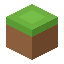
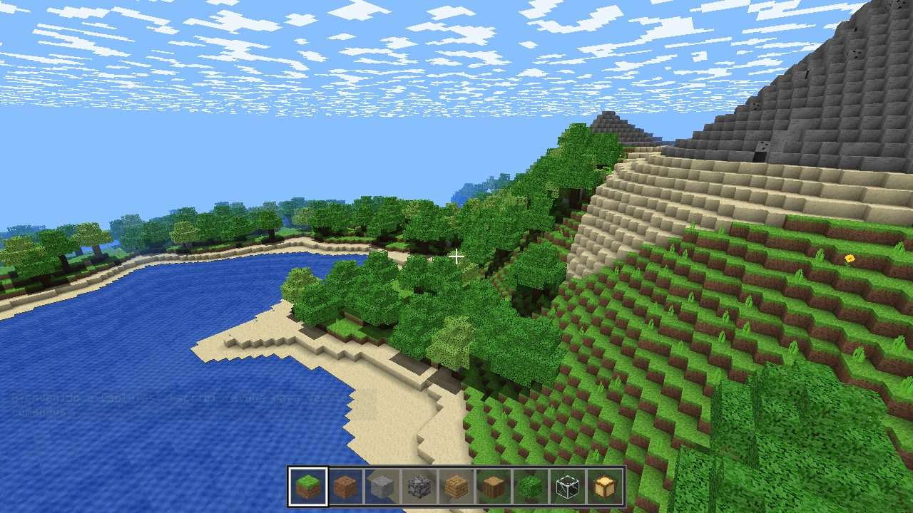
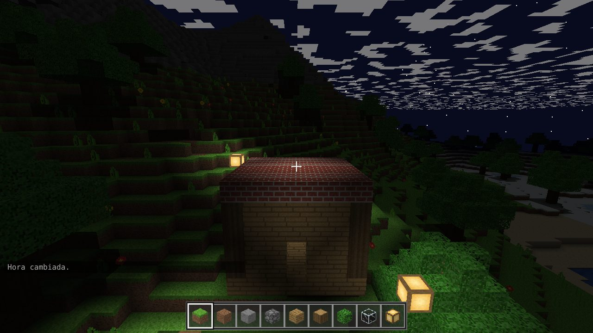
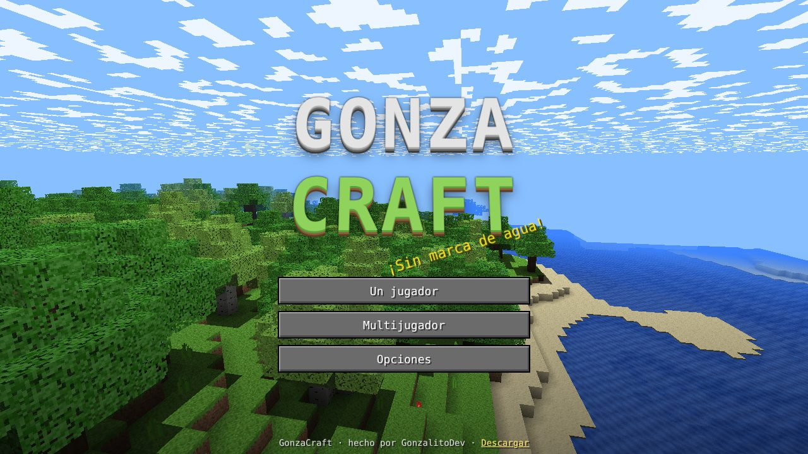

GonzaCraft ← Volver a Taller
Un mundo infinito de bloques para explorar, construir y sobrevivir. Jugá solo o con amigos. Gratis, sin anuncios y sin crear cuentas.
Versión 1.0 · ¿Otra distro de Linux? Usá el AppImage.


O desde la terminal, en Descargas:
sudo apt install ./GonzaCraft.debSe juega con el celular acostado: arrastrá a la izquierda para caminar y a la derecha para mirar. Tocá para poner un bloque y mantené apretado para romperlo.
Requisitos: computadora de 64 bits con una placa de video que soporte OpenGL 3 o WebGL 2 (casi cualquiera de los últimos 10 años). En Android, la versión 6 o más nueva. Para el multijugador hace falta internet.
¿Tenés un VPS con Ubuntu o Debian? Con un solo comando armás un servidor que está prendido siempre, guarda el mundo y deja entrar a tus amigos aunque vos no estés jugando. También se puede jugar desde el navegador en la misma dirección.
curl -fsSL https://raw.githubusercontent.com/GonzalitoDev/corte-editor/main/servidor-gonzacraft/instalar.sh | sudo NOMBRE="Mi servidor" bashAl final te muestra la dirección. En el juego: Multijugador → pegá la dirección → Agregar → Entrar. Más detalles en la guía del servidor.
| W A S D | Moverse |
| Espacio | Saltar. En creativo, dos veces seguidas para volar |
| W dos veces o Ctrl | Correr |
| Shift | Agacharse (no te caés de los bordes) o bajar volando |
| Clic izquierdo / derecho | Romper / poner bloques |
| Rueda del mouse o 1–9 | Elegir bloque |
| E | Inventario y fabricar |
| T | Chat y comandos (/ayuda) |
| F2 · F3 · F11 | Captura · información · pantalla completa |